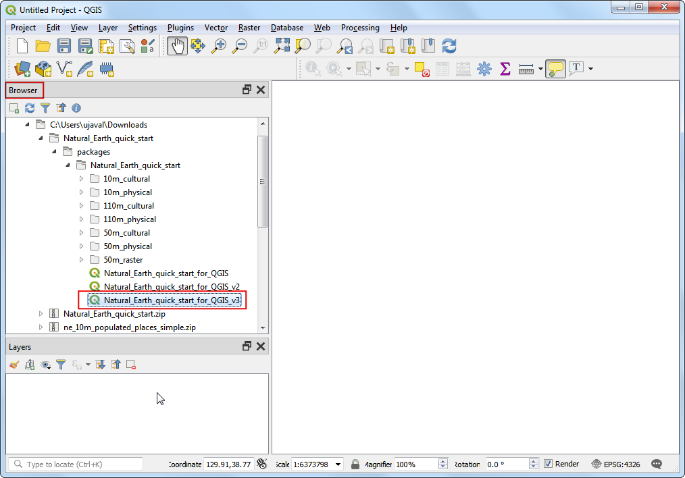
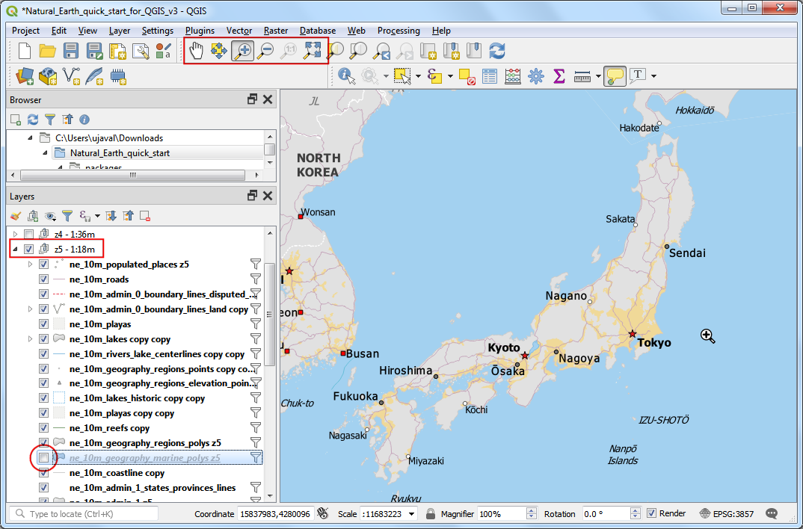
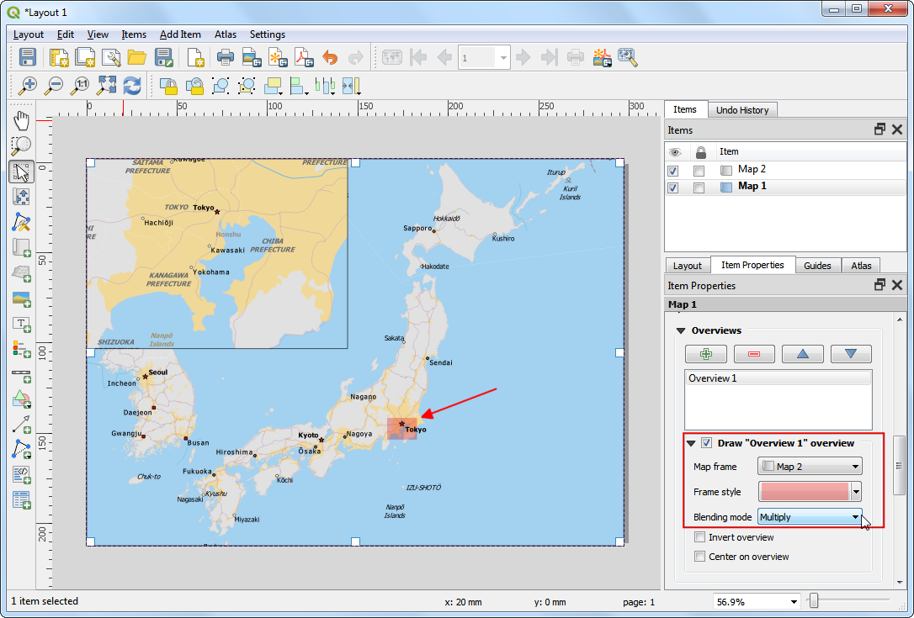
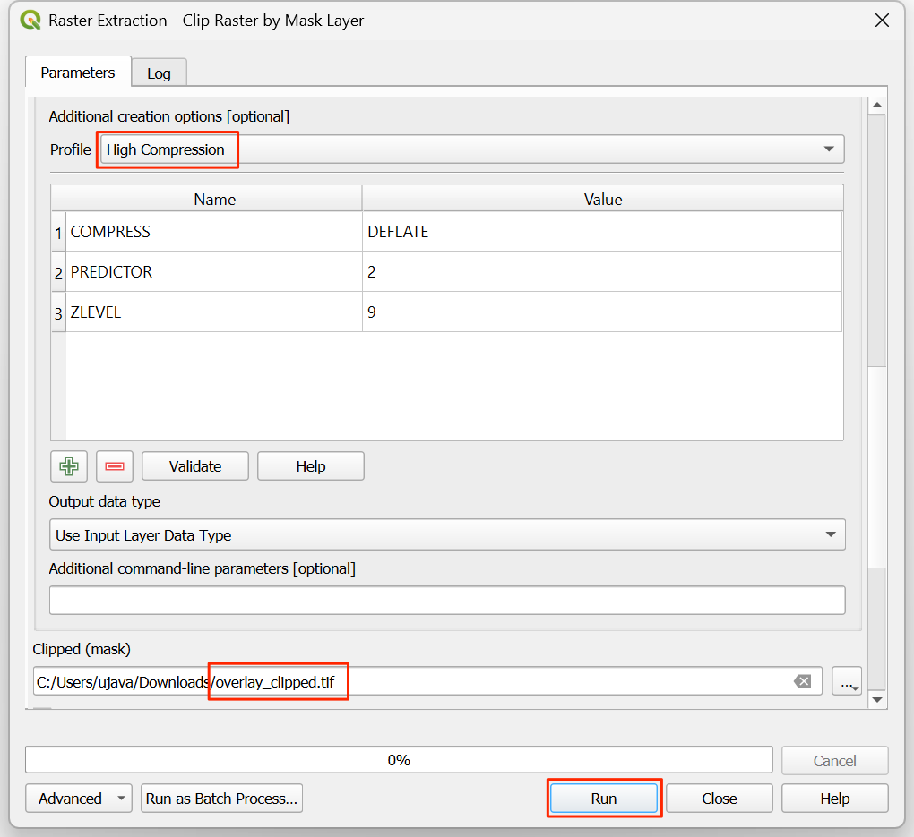
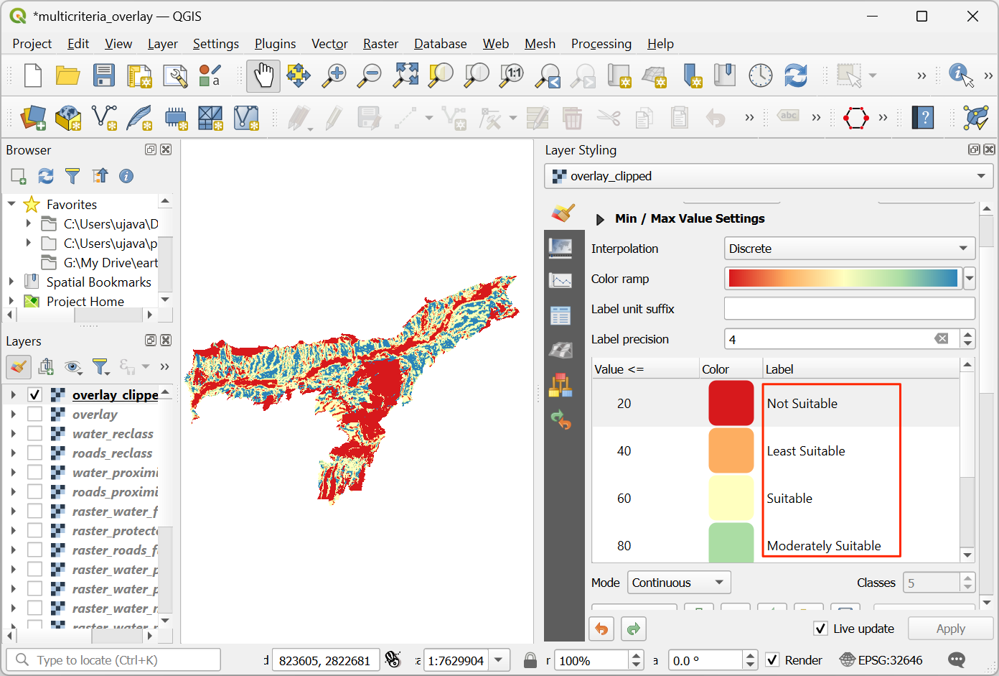
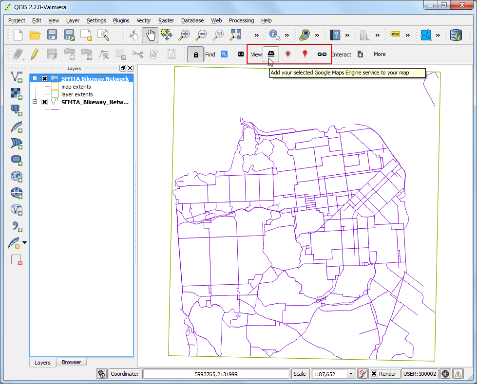

Multikriterielle Überlagerungs-Analyse (QGIS3)¶
Unter gewichteter multikriterieller Überlagerungs-Analyse wird die Auswahl von Flächen auf der Basis mehrerer Attribute verstanden, die im Untersuchungsgebiet definiert sein sollten. Obwohl es sich um eine verbreitete GIS-Technik handelt, wird diese am effizientesten mit einem gitterbasierten Ansatz auf Rasterdaten ausgeführt.
Bemerkung
Vektor- vs. Raster-Überlagerungen
Man kann Überlagerungs-Analysen auf Vektordaten ausführen, indem Verarbeitungswerkzeuge für Geodaten wie Puffer, Überblendungen, Differenzbildungen oder Überschneidungen eingesetzt werden. Diese Methoden sind perfekt geeignet, wenn ein binäres Ergebnis wie geeignet / nicht geeignet erzeugt werden soll und mit einigen wenigen Layern gearbeitet wird.
Die Arbeit mit Rasterdaten ergibt eine Rangfolge der Eignung und nicht nur die am besten geeignete Fläche. Sie ermöglicht es auch, einfach eine beliebige Anzahl an Eingabelayern zu kombinieren und jedem verwendeten Kriterium eine unterschiedliche Wichtung zuzuweisen. Es handelt sich um das allgemein bevorzugte Vorgehen für die Bewertung der Eignung von Flächen.
Dieses Tutorial behandelt den typischen Arbeitsablauf für die Ausführung einer Flächeneignungsanalyse. Es werden Vektor-Quelldaten zu geeigneten Rasterdaten konvertiert. Letztere werden re-klassifiziert und mathematischen Operationen unterzogen.
Überblick über die Aufgabe¶
In diesem Tutorial bestimmen wir geeignete Flächen für die Erschließung, welche sich
nah an Straßen und
abseits von Gewässern und
nicht in Schutzgebieten befinden.
Beschaffung der Daten¶
Wir verwenden Layer von Vektordaten aus dem OpenStreetMap-Projekt (OSM). OSM ist eine Datenbank weltweit frei verfügbarer Basis-Kartendaten. Geofabrik vertreibt täglich aktualisierte Shapefiles der OpenStreetMap-Datensätze.
Wir verwenden die OSM-Datenlayer für den indischen Bundesstaat Assam. Die von Geofabrik heruntergeladenen India Shapefiles sind auf die Grenzen des Bundesstaats zugeschnitten und in einer einzigen GeoPackage-Datei zusammengefasst worden. Eine Kopie der Daten kann von folgendem Link heruntergeladen werden:
Datenquelle: [GEOFABRIK]
Arbeitsablauf¶
Wir suchen die heruntergeladene Datei
assam.gpkgim QGIS-Browser, erweitern sie und ziehen jeden der 5 Datenlayer in den Arbeitsbereich. Die Layerboundary,roads,protected_regions,water_polygonsundwater_polylineswerden in das Layer-Panel geladen.

Der erste Schritt der Überlagerungs-Analyse besteht darin, jeden der Datenalyer in einen Rasterlayer zu konvertieren. Es ist wichtig, dass alle entstehenden Rasterlayer dieselbe Ausdehnung haben. Wir verwenden den
boundary-Layer als Begrenzung für die Rasterlayer. wir wählen und suchen den Algorithmus und starten ihn per Doppelklick.

Im Dialogfenster Rastern (Vektor nach Raster) wählen wir
roadsals Eingabelayer. Wir wollen ein Ausgaberaster erzeugen, in welchem der Pixelwert 1 die Straßen und der Wert 0 keine Straßen darstellt. Wir geben1als Festen Wert einbrennen an. Die Eingabelayer sind in einem KBS definiert, welches Meter als Einheit verwendet. Wir wählenGeoreferenzierte Einheitenals Ausgaberastergrößeneinheiten. Die Auflösung des Ausgaberasters soll 15 Meter betragen. Dazu setzen wir sowohl die Breite/Horizontale Ausflösung als auch die Höhe/Vertikale Auflösung auf15. Danach öffnen wir die Drop-Down-Liste neben Ausgabegröße und wählen Aus Layer berechnen -> boundary.

Wir scrollen weiter nach unten und löschen den Wert bei Legt den Leerwert des Ausgabekanals fest.

Dieser Wert sollte nun als
Nicht gesetztangezeigt werden. Das ist wichtig, weil der später benutzte Rasterrechner einen NULL-Wert (engl. nodata value) für ein Pixel in irgendeinem Layer in einen NULL-Wert in der Ausgabe umsetzt, was ein falsches Ergebnis darstellt.

Im Abschnitt Fortgeschrittene Parameter weiter unten wählen wir als Profil
Hohe Kompression, um das Bild zu komprimieren. Das komprimierte Rasterbild wird dadurch nach Anwenden des Werkzeugs weniger Speicherplatz beanspruchen. Eine verlustlose Kompression ist für die Arbeit mit Rasterdatan dringend zu empfehlen.

Unter Gerastert -> In Datei speichern… geben wir
raster_roads.tifals Ausgaberaster an und betätigen die Schaltfläche Starte.

Nach Ende der Verarbeitung wird der neue Layer raster_roads in das Layer-Panel geladen. Die Voreinstellung zeigt Pixel mit Straßen in weiß und den Rest in schwarz an. Auf dieselbe Art und Weise wollen wir die anderen 4 Vektorlayer konvertieren. Statt den Rastern-Algorithmus jedesmal neu zu starten, können wir auch die eingebaute Stapelverarbeitungsfunktion benutzen, um alle Layer auf einmal zu konvertieren. Weiterführende Informationen zur Stapelverarbeitung enthält das Tutorial Stapelverarbeitung mit dem Processing Framework (QGIS3). Per Rechtsklick öffnen wir das Kontextmenü des Algorithmus
Rastern (Vektor nach Raster)und wählen Als Stapelprozess ausführen.

Im Dialogfenster Stapelverarbeitung ist als erster Eingabelayer der im Layer-Panel des QGIS-Hauptfensters ausgewählte Layer ausgewählt. Mithilfe der Drodown-Liste Autofüllung… in der Spalte Eingabelayer wählen wir Aus geöffneten Layern wählen…. Wir wählen die noch nicht angezeigten Rasterlayer aus
boundary,protected_regions,water_polygonsundwater_polylinesaus und klicken OK.

Bemerkung
Die Option Fortgeschrittene Parameter sind bei der Ausführung des Algorithmus im Stapel-Modus nicht verfügbar. Wir müssen alle oben beschriebenen Schritte außer denen zur Kompression für alle Ausgabelayer wiederholen.
Dazu geben wir in die erste Zeile dieselben Werte für die Parameter wie für den
roads-Layer ein und verwenden die Schaltflächen , um die Werte auf alle Layer anzuwenden.

In der letzten Spalte Gerastert betätigen wir die Schaltfläche … in der ersten Zeile. Wir geben
raster_als Dateinamen ein und Speichern. Im Pop-Up-Fenster wählen wir als AutofüllmodusMit Parameterwerten füllenund in Zu benutzender ParameterEingabelayer; wir bestätigen mit OK.

Die Schnittstelle zur Stapelverarbeitung ergänzt den Dateinamen mit den Layernamen und füllt alle Zeilen aus. Wir sollten sicherstellen, dass die Option Layer bei Abschluss laden gesetzt ist, bevor wir die Schaltfläche Starte betätigen.

Nach Abschluss der Verarbeitung sind 4 neue Layer im Layer-Panel geladen. Offensichtlich gibt es 2 Layer mit Bezug zu Gewässern. Wir können beide Layer zu einem verschmelzen, welcher die Gewässer der Region repräsentiert. Wir suchen den Algorithmus in den Verarbeitungswerkzeugen und starten ihn per Doppelklick.

Wir öffnen das Dialogfenster Rasterrechnerausdruck durch Betätigen der Schaltfläche
Ɛund geben den unten stehenden Ausdruck ein. Der Ausdruck besagt, dass die Pixelwerte des jeweils ersten Kanals der Wasser-Layer summiert werden sollen. Wir wählen mithilfe der Schaltfläche...neben Eingabelayer die zu verschmelzenden Layerraster_water_polygonsundraster_water_polylinesaus. Mithilfe der Schaltfläche … neben Berechnet setzen wir als Namen für den Ausgabelayerraster_water_merged.tifund betätigen die Schaltfläche Starte.
"raster_water_polygons@1" + "raster_water_polylines@1"
Das Ergebnis enthält Pixel mit dem Wert 1 für alle Gebiete mit Wasserflächen. Es gibt jedoch auch einige Regionen, in denen sowohl Wasser-Polygone als auch -Linien verzeichnet sind. Dort werden sich Pixel mit dem Wert 2 finden lassen ‒ was nicht korrekt ist. Wir können dies aber mit einem einfachen Ausdruck beheben. Wir wählen den erneut.

Wir geben den folgenden Ausdruck ein, der allen Pixeln, für die er
wahrist, den Wert 1 zuordnet und allen übrigen den Wert 0. Mithilfe der Schaltfläche … neben Eingabelayer wählen wirraster_water_merged. Die Ausgabe nennen wirraster_water.tifund betätigen die Schaltfläche Starte.
"raster_water_merged@1" > 0
Der Ergebnislayer
raster_waterhat nur noch Pixel mit den Werten 0 und 1.

Mithilfe der Layer für Straßen und Gewässer können wir nun Nachbarschaftsraster erstellen. Diese werden auch Euklidische Distanzen genannt, bei denen jeder Pixel im Ausgaberaster den Abstand zum nächstgelegenen Pixel im Eingaberaster repräsentiert. Das Ergebnisraster kann anschließend verwendet werden, um geeignete Gebiete innerhalb eines bestimmten Abstandes von den Eingabepixeln zu definieren. Wir suchen den Algorithmus und starten ihn per Doppelklick.

Im Dialogfenster Nähe (Rasterabstand) wählen wir
raster_roadsals Eingabelayer undGeoreferenzierte Koordinatenals Distanzeinheit. Da in den Eingabelayern durch das projizierte KBSMeterals Einheit verwendet werden, geben wir5000(5 Kilometer) als Maximal zu generierender Abstand ein. Es muss sichergestellt sein, dass Für Zielnäheraster zu verwendender LeerwertNicht gesetztist.

Nach Erweiterung des Bereichs Fortgeschrittene Parameter wählen wir als Profil
Hohe Kompressionaus. Die Ausgabedatei benennen wir mitroads_proximity.tifund betätigen die Schaltfläche Starte.

Bemerkung
Die Verarbeitung kann bis zu 15 Minuten in Anspruch nehmen. Es handelt sich um einen rechenintensiven Algorithmus, mit dem der Abstand jedes Pixels des Eingaberasters berechnet wird, und unser Eingaberaster enthält über 1 Milliarde Pixel.
Nach Abschluss der Berechnungen wird ein neuer Layer
roads_proximityzum Layer-Panel hinzugefügt. Um ihn besser zu visualisieren, sollten wir die Voreinstellung für die Darstellung ändern. Wir betätigen die Schaltfläche Layergestaltungsfenster öffnen im Layer-Panel und ändern den Max-Wert unter Farbverlauf auf5000.

Wir wiederholen die Anwendung des Algorithmus‘ Nähe (Rasterabstand) für den Layer
raster_watermit denselben Parametern und nennen die Ausgabedateiwater_proximity.tif.

Nach Abschluss der Verarbeitung kann die gleiche Darstellung wie zuvor angewandt werden, um das Ergebnis besser zu visualisieren. Wenn wir in den Pixeln des Rasters herumklicken, können wir erkennen, dass es sich bei den Werten um ein Kontinuum der Werte zwischen 0 und 5000 handelt. Um das Raster für die Überlagerungs-Analyse verwenden zu können, müssen wir es zuerst reklassifizieren, um diskrete Werte zu erzeugen. Dazu öffnen wir den Algorithmus erneut.

Auf näher an der Straße gelegene Pixel wollen wir höhere Bewertungen anwenden; dazu benutzen wir das folgende Schema.
0 - 1000 m –> 100
1000 - 5000 m –> 50
> 5000 m –> 10
Wir geben den folgenden Ausdruck ein, der die oben definierten Kriterien anwendet. Mithilfe der Schaltfläche … neben Eingabelayer wählen wir
roads_proximity. Die Ausgabe nennen wirroads_reclass.tifund betätigen die Schaltfläche Starte.100*("roads_proximity@1"<=1000) + 50*("roads_proximity@1">1000)*("roads_proximity@1"<=5000) + 10*("roads_proximity@1">5000)
Nach Abschluss der Reklassifizierung wird dem Layer-Panel ein neuer Layer
roads_reclasshinzugefügt. Dieser Layer hat nur 3 verschiedene Werte ‒ 10, 50 und 100, welche welche die relative Eignung dieser Pixel in Bezug auf die Entfernung zu Straßen repräsentieren. Wir öffnen den erneut.

Wir wiederholen die Reklassifizierung für den Layer
water_proximity. Hier ist das Schema umgekehrt, weil die Pixel mit größerer Entfernung zu den Wasserflächen höhere Werte erhalten sollen.
0 - 1000 m –> 10
1000 - 5000 m —> 50
> 5000 m –> 100
Wir geben den folgenden Ausdruck ein, der die oben definierten Kriterien anwendet. Mithilfe der Schaltfläche … neben Eingabelayer wählen wir
water_proximity. Die Ausgabe nennen wirwater_reclass.tifund betätigen die Schaltfläche Starte.100*("water_proximity@1">5000) + 50*("water_proximity@1">1000)*("water_proximity@1"<=5000) + 10*("water_proximity@1"<1000)
Nun ist alles für die abschließende Überlagerungs-Analyse vorbereitet. Hier sind noch einmal die Kriterien, die eine Eignung für eine Erschließung abbilden: nahe an Straßen, abseits von Wasserflächen und nicht in Schutzgebieten gelegen. Wir öffnen den und geben den folgenden Ausdruck ein, der diese Kriterien anwendet. Wichtig ist die Multiplikation des Ergebnisses mit
raster_boundary@1am Ende, um Pixel außerhalb der Grenzen des Bundesstaates auszuschließen. Wir betätigen die Schaltfläche … neben Eingabelayer und wählen die Layerroads_reclass,water_reclass,raster_protected_regionsundraster_boundary. Unter Ausgabegröße -> Aus Layer berechnen… wählen wirraster_boundary. Die Ausgabe nennen wiroverlay.tifund betätigen die Schaltfläche Starte.
("roads_reclass@1" + "water_reclass@1")*("raster_protected_regions@1" != 1 )*"raster_boundary@1"
Bemerkung
In unserem Beispiel haben wir die Nähe zu Straßen und zu Gewässern gleich gewichtet. In einem realen Szenario mag es vielfältige Kriterien mit unterschiedlicher Bedeutsamkeit geben. Man kann das dadurch nachbilden, dass die verschiedenen Raster im obigen Ausdruck mit entsprechenden Wichtungen multipliziert werden. Wenn z. B. die Nähe zu Straßen doppelt so wichtig ist wie der Abstand zu Gewässern, müsste das Raster roads_reclass mit 2 multipliziert werden.
Nach Abschluss der Verarbeitung wird das Raster
overlayzum Layer-Panel hinzugefügt. Die Pixelwerte variieren von 0 bis 200, wobei Werte von 0 die am wenigsten geeigneten und Werte von 200 die geeignetsten Gebiete für eine Erschließung kennzeichnen. Wir betätigen die Schaltfläche Layergestaltungsfenster öffnen für den Layeroverlay.

Wir wählen den Renderer
Einkanalpseudofarbeund den FarbverlaufSpectral. Wir betätigen die Schaltfläche Klassifizieren, um den Farbverlauf auf das Raster anzuwenden.

Durch Doppelklick auf die voreingestellten Beschriftungen können wir jeder Farbe geeignete Werte zuordnen. Die Beschriftungen werden als Legende unter dem
overlay-Layer angezeigt.

Rasterlayer bestehen aus rechteckigen Gittern. Wir wollen die Pixel ausßerhalb der Staatsgrenze verbergen. Eine einfache Methode dafür ist die Anwendung
Invertierter Polygone, die auf den Vektorlayer mit der Grenze gerendert werden. Wir scrollen im Layer-Panel nach unten bis zum Layerboundary. Wir wählen in den LayereigenschaftenInvertierte Polygoneals Renderer und belassen bei allen anderen Optionen die Voreinstellungen.

Um die Auswirkung des Renderers anzuzeigen, ist es nötig, dass der Layer nach oben sortiert wird. Dazu öffnen wir per Rechtsklick das Kontextmenü des Layers
boundaryund wählen Nach oben bringen.

Wir schalten den Layer sichtbar, und im Kartenbereich sollte das
overlay-Raster auf denboundary-Layer zugeschnitten sein. Dies stellt die endgültige Ausgabe dar, in der die Flächen innerhalb des Bundesstaates in ihrer Eignung für die Erschließung angezeigt werden.

If you want to give feedback or share your experience with this tutorial, please comment below. (requires GitHub account)